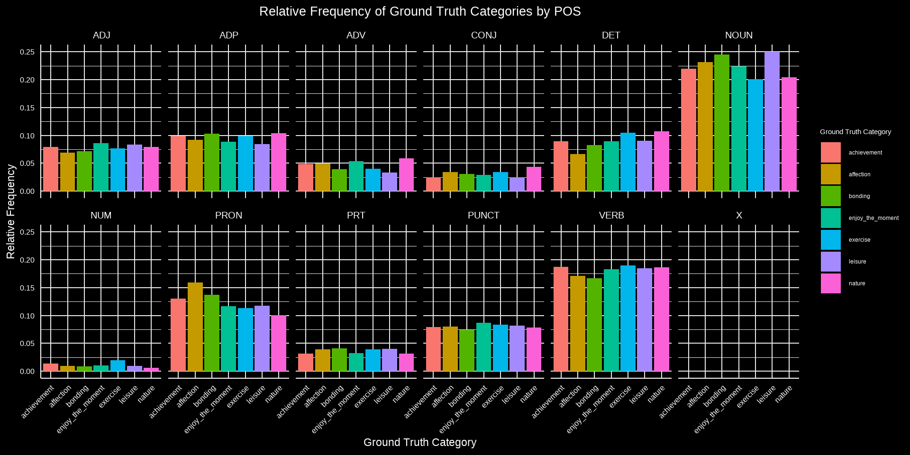

A Lingustic Deep Dive
tidyverse librarieshere used for relative directory navigationemojifont used to place emoji on plots.plotly and shiny used to create interactive visuals.Within the happy moments dataset, do moments belonging to different categories feature different part of speech distributions? Perhaps some categories feature an uncharacteristic number of adjectives, for example?
Keep only categories we know the ground truth for - there’s still a lot of data and it’s not clear how accurate the predicted categories are.
Calculate relative frequency of POS within each ground_truth_category. This is necessary since the ground_truth_category counts are not at all balanced.
# A tibble: 83 × 4
# Groups: ground_truth_category [7]
ground_truth_category POS count relative_frequency
<chr> <chr> <int> <dbl>
1 achievement ADJ 6018 0.0789
2 achievement ADP 7529 0.0987
3 achievement ADV 3682 0.0482
4 achievement CONJ 1877 0.0246
5 achievement DET 6797 0.0891
6 achievement NOUN 16734 0.219
7 achievement NUM 1051 0.0138
8 achievement PRON 9910 0.130
9 achievement PRT 2412 0.0316
10 achievement PUNCT 6009 0.0787
# ℹ 73 more rowsPlot the faceted bar chart of relative frequency for each POS and ground_truth_category
ggplot(pos_count, aes(x = ground_truth_category, y = relative_frequency, fill = ground_truth_category)) +
geom_bar(stat = "identity") +
xlab("Ground Truth Category") +
ylab("Relative Frequency") +
ylim(0, max(pos_count$relative_frequency)) +
ggtitle("Relative Frequency of Ground Truth Categories by POS") +
facet_wrap(~ POS, nrow = 2) +
scale_fill_discrete(name = "Ground Truth Category") +
dark_theme() +
theme(axis.text.x = element_text(angle = 45, hjust = 1, size = 12),
axis.text.y = element_text(size = 12),
axis.title.x = element_text(size = 17),
axis.title.y = element_text(size = 17)
)
While there isn’t quite as much variance as I’d have hoped, the bar charts still show some that every category uses each part of speech in quite the same way.
The big standouts to me here are affection pronounces and leisure nouns, but lets dive a little deeper.
Which (POS, ground_truth_category) pairs most differ from other categories for that part of speech?
Is there a category that frequently differs from other categories across many parts of speech?
average_pos_frequency <- average_pos_frequency %>%
mutate(emoji = case_when(ground_truth_category=="achievement"~"🏆",
ground_truth_category=="affection"~"❤️",
ground_truth_category=="bonding"~"👪",
ground_truth_category=="enjoy_the_moment"~"😊",
ground_truth_category=="leisure"~"⛱️",
ground_truth_category=="nature"~"🌳",
ground_truth_category=="exercise"~"🏋️",
T~"")
)# A tibble: 83 × 7
# Groups: ground_truth_category [7]
ground_truth_category POS count relative_frequency average_frequency
<chr> <chr> <int> <dbl> <dbl>
1 achievement ADJ 6018 0.0789 0.0778
2 achievement ADP 7529 0.0987 0.0956
3 achievement ADV 3682 0.0482 0.0462
4 achievement CONJ 1877 0.0246 0.0315
5 achievement DET 6797 0.0891 0.0902
6 achievement NOUN 16734 0.219 0.225
7 achievement NUM 1051 0.0138 0.0110
8 achievement PRON 9910 0.130 0.125
9 achievement PRT 2412 0.0316 0.0362
10 achievement PUNCT 6009 0.0787 0.0803
# ℹ 73 more rows
# ℹ 2 more variables: difference_from_average <dbl>, emoji <chr>p <- ggplot(average_pos_frequency, aes(x = POS, y = difference_from_average, label = emoji, color = ground_truth_category, text = ground_truth_category)) +
geom_text(family = "EmojiOne", size = 7) +
labs(title = "Difference in Relative Frequency from Average",
x = "POS", y = "Difference") +
dark_theme() +
theme(axis.text.x = element_text(angle = 45, hjust = 1)) +
guides(color = FALSE)
p <- ggplotly(p, tooltip = c("x", "y", "text"))
pThis chart confirms what we initially observed from the bar chart from the initial research question.
Pronouns and nouns appears to be the parts of speech most affected by the category, while adjectives and conjunctions are hardly affected at all.
Occur More than in Other Categories:
Occur Less than in Other Categories:
senselabel with cleaned_hm on hmid and once again calculate frequenciesPOSjoined_data dfjoined_data <- inner_join(cleaned_hm, senselabel, by = "hmid") %>%
dplyr::filter(!is.na(ground_truth_category)) %>%
group_by(POS, lowercaseLemma) %>%
mutate(total_count = n()) %>%
ungroup() %>%
group_by(POS, lowercaseLemma, ground_truth_category) %>%
mutate(within_category_count = n()) %>%
ungroup() %>%
mutate(relative_frequency = within_category_count / total_count)
average_relative_freq <- joined_data %>%
group_by(POS, lowercaseLemma) %>%
summarize(avg_relative_freq = mean(relative_frequency, na.rm = TRUE))
joined_data <- joined_data %>%
left_join(average_relative_freq, by = c("POS", "lowercaseLemma")) %>%
group_by(POS, lowercaseLemma) %>%
mutate(max_relative_frequency = max(relative_frequency))Sets up the shiny ui and server.
ui <- fluidPage(
titlePanel("Word Frequency Analysis"),
sidebarLayout(
sidebarPanel(
# Category filter
selectInput("category_filter", "Category:", choices = unique(joined_data$ground_truth_category)),
# POS filter
selectInput("pos_filter", "POS:", choices = unique(joined_data$POS)),
# Top words count
numericInput("top_words_count", "Top Words Count:", value = 10, min = 1),
# Standout words threshold
sliderInput("standout_words_threshold", "Standout Words Threshold:", min = 0, max = 1, value = 0.8),
#Total Count Filter
sliderInput("total_count_filter", "Total Count Filter:", min = 1, max = 100, value = 2)
),
mainPanel(
tabsetPanel(
tabPanel(
"Top Words",
tableOutput("top_words_table")
),
tabPanel(
"Standout Words",
p("This tab displays the words that appear in the selected category significantly more than any other category. The relative_frequency denotes how many times a word appeared for a particular (POS, category) combination relative to every other category. For example, a relative frequency of 0.8 and total_count of 5 means of the 5 times the word appeared, 4 of them were in this category."),
tableOutput("standout_words_table")
)
)
)
)
)server <- function(input, output) {
output$top_words_table <- renderTable({
filtered_data <- joined_data %>%
filter(POS == input$pos_filter, ground_truth_category == input$category_filter) %>%
count(lowercaseLemma) %>%
arrange(desc(n)) %>%
head(input$top_words_count)
filtered_data
})
output$standout_words_table <- renderTable({
filtered_data <- joined_data %>%
dplyr::filter(POS == input$pos_filter,
ground_truth_category == input$category_filter,
total_count >= input$total_count_filter) %>%
group_by(lowercaseLemma) %>%
dplyr::select(lowercaseLemma, relative_frequency, avg_relative_freq, total_count) %>%
distinct() %>%
dplyr::filter(relative_frequency >= input$standout_words_threshold) %>%
arrange(desc(relative_frequency), desc(total_count))
filtered_data
})
}I was the most common pronoun for all happy moment categories… besides affection, where my came out on top.POS down to ADJ on the Standout Words tab and observe how many non-adjectives were classified as adjectives.